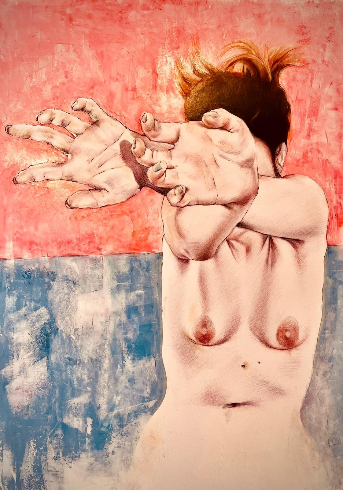
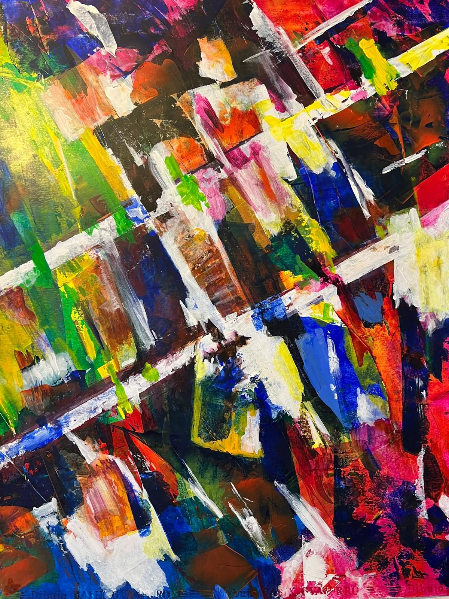
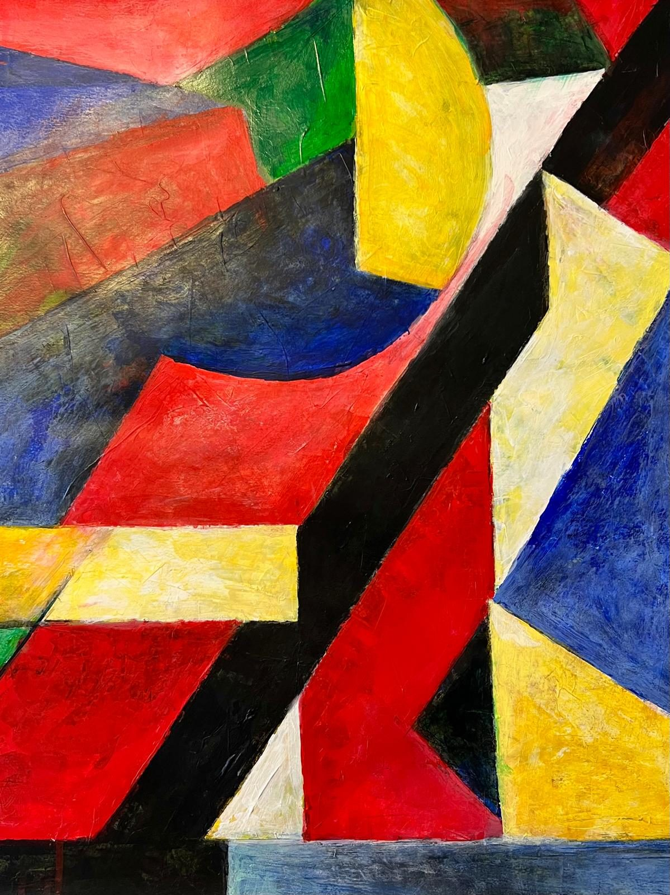
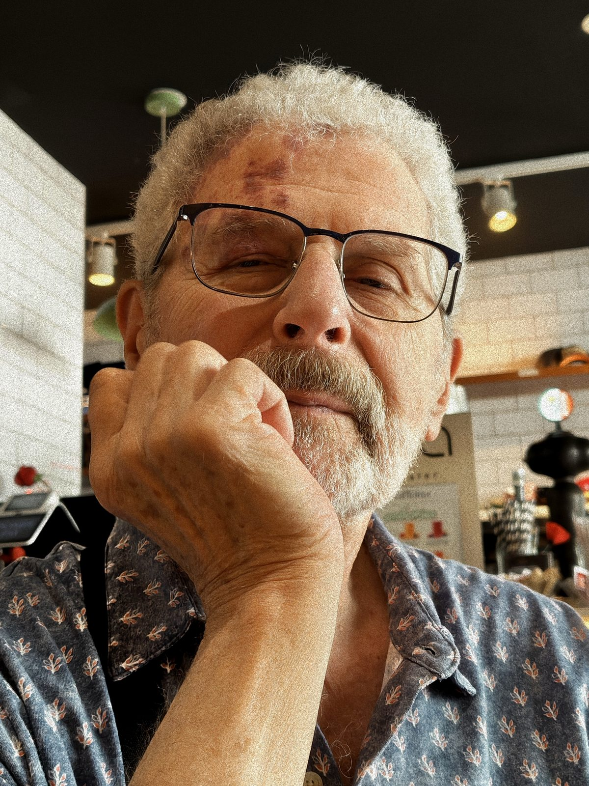
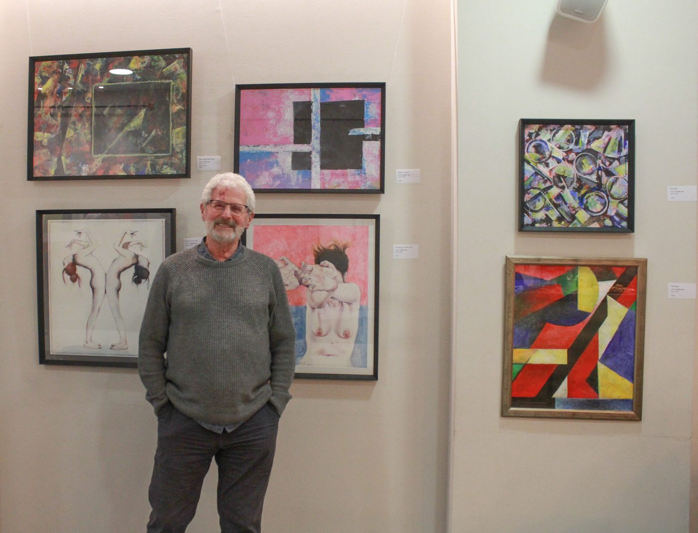

Grounded in careful observation and a classical tradition, the early paintings are studies in light's relationship to the material world. Figures and form rendered with a quiet intensity — presence held in paint.

The later work releases the grip of representation, allowing form and colour to speak on their own terms. Movement, tension, and stillness coexist within each canvas — an inner landscape made visible through gesture and field.




Tomas Lay was born in Hungary. In 1956, his family fled during the October Revolution, eventually making their way to the United States, where he grew up from the age of nine. He lived and worked in America for several decades, including a period teaching art at Pima College in Arizona. He later settled in Valencia, Spain, where he continues to paint.
His earlier work is rooted in figuration — a practice built on careful looking, on the relationship between the human body and the surfaces it inhabits. Over time, his painting moved toward abstraction, not as a rejection of what came before but as a deepening of the same questions.
His paintings are held in private collections and have been exhibited across Europe and the United States.